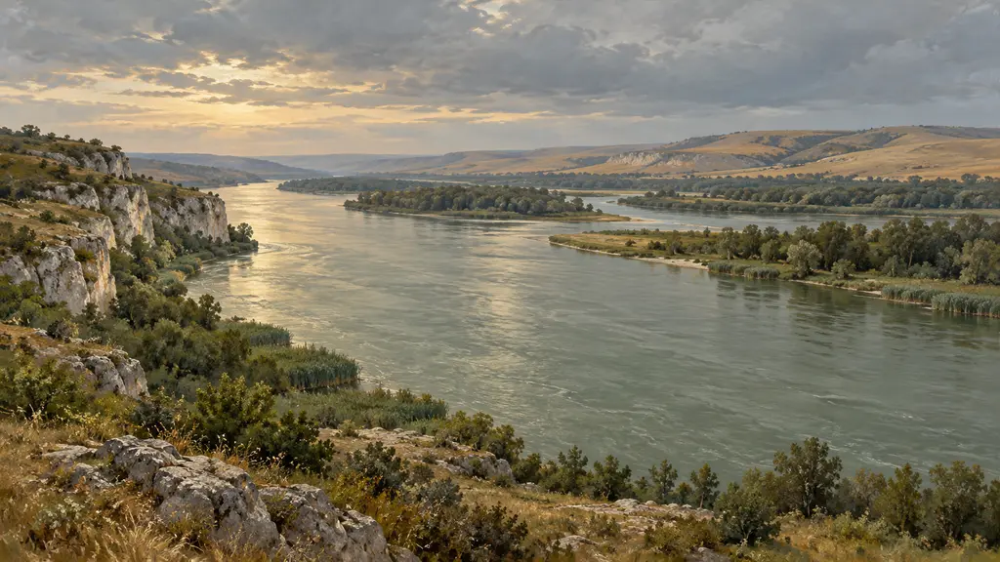
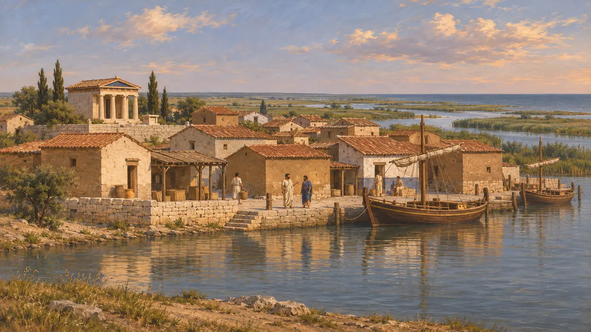
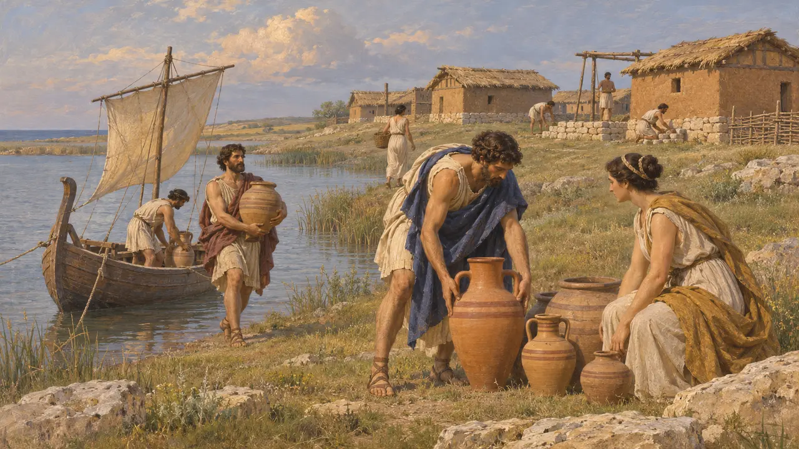
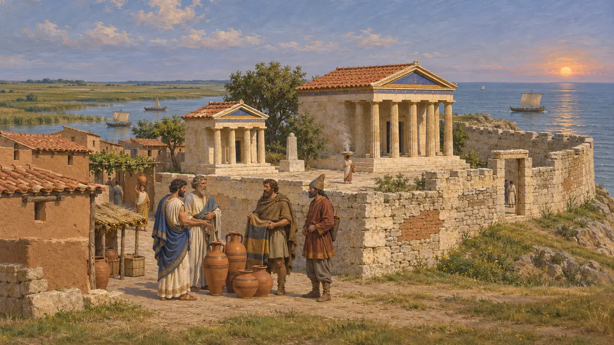
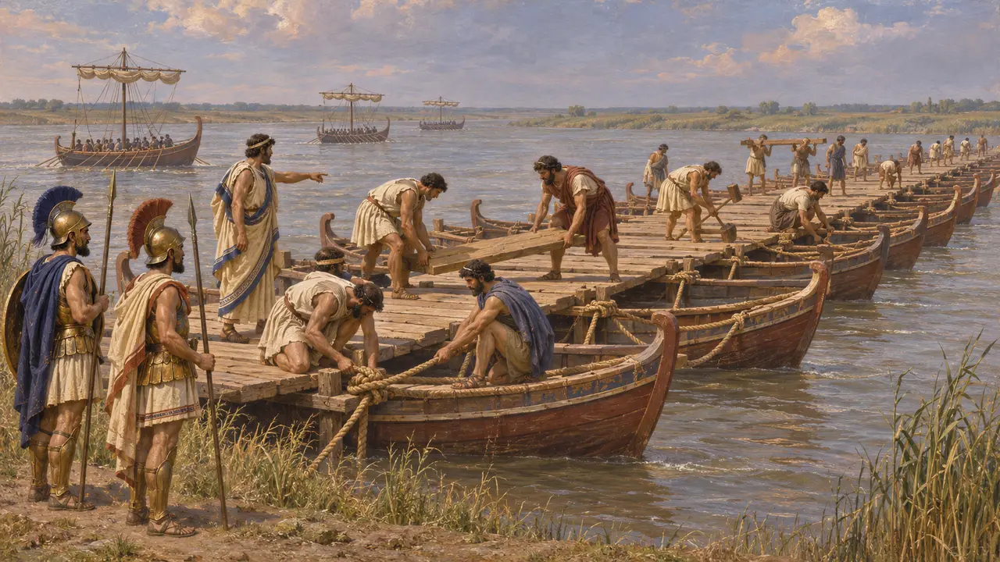
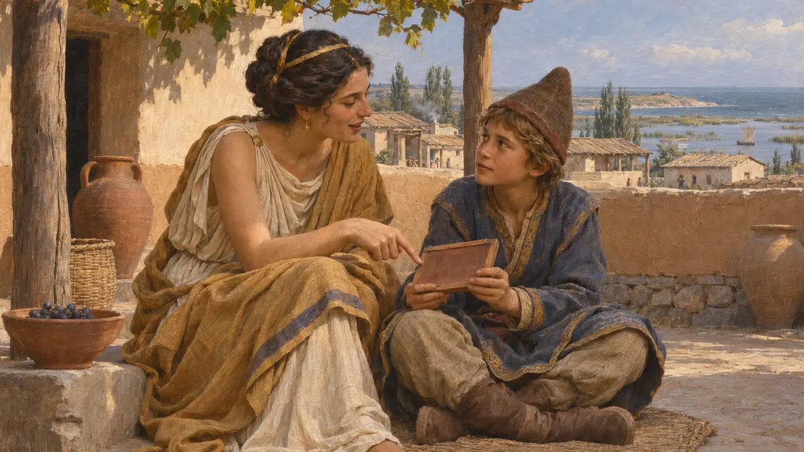

Istros
Colônia grega milésia no mar Negro, perto da foz do Istro, a partir do século VII AEC
Istros, também chamada Hístria, era uma cidade grega fundada por colonos de Mileto na costa ocidental do mar Negro, logo ao sul do delta do Danúbio, na atual Romênia. Comerciava com os povos citas e trácios do interior e ficava perto da foz do rio por onde a frota grega de Dario entrou no Istro durante a expedição cita de cerca de 513 AEC.
No jogo: O jogo faz de Istros um parceiro comercial na fase do Istro. Nenhuma fonte antiga registra Istros comerciando com o exército de Dario; o vínculo é uma simplificação plausível, baseada na posição da cidade perto da rota da frota.

Uma cidade milésia na foz do rio
Relato antigoHeródoto, ao descrever o curso do Istro, diz que o rio chega ao mar em Ístria, onde viviam colonos milésios. Estrabão, escrevendo quase cinco séculos depois, situa a pequena cidade de Istros a certa distância ao sul da Boca Sagrada do rio.
Herodotus 2.33; Strabo, Geography book 7

Quando a colônia foi fundada
DisputadoA tradição cronográfica tardia de Eusébio situa a fundação por volta de 657 AEC. Um poema geográfico atribuído ao Pseudo-Cimno a relaciona à época em que os citas perseguiram os cimérios até a Ásia. A cerâmica grega mais antiga encontrada no local costuma ser datada de cerca de 630 AEC ou um pouco antes. Os historiadores ainda discutem se a data literária ou a cerâmica deve ter mais peso.
Eusebius, Chronicle; Pseudo-Scymnus, Periodos; A. Avram, in M. H. Hansen and T. H. Nielsen, An Inventory of Archaic and Classical Poleis, 2004

O que as escavações encontraram
Nos registrosArqueólogos romenos escavam em Hístria desde 1914, a começar por Vasile Pârvan. A cidade ficava num promontório baixo junto a uma baía que desde então se assoreou e virou laguna, de modo que as ruínas hoje estão afastadas do mar aberto. As escavações revelaram uma área sagrada com templos de Zeus Polieu e de Afrodite, casas e muralhas reconstruídas muitas vezes. A cerâmica grega encontrada em sítios nativos do interior atesta o comércio com os vizinhos getas e citas.
A. Avram, in M. H. Hansen and T. H. Nielsen, An Inventory of Archaic and Classical Poleis, 2004; G. Tsetskhladze (ed.), The Greek Colonisation of the Black Sea Area, 1998

Istros e a expedição contra os citas
DisputadoHeródoto conta que os contingentes jônios e de outros gregos subiram o Istro para construir uma ponte para Dario, mas nunca menciona Istros em seu relato da campanha. Escavações revelaram uma camada de destruição no povoado datada de por volta do fim do século VI. Alguns estudiosos a associam à expedição de Dario ou a incursões citas posteriores; outros não veem relação alguma. Não se sabe se Istros chegou a ficar sob controle persa.
Herodotus 4.89; A. Avram, in M. H. Hansen and T. H. Nielsen, An Inventory of Archaic and Classical Poleis, 2004

A mãe istriana de um rei cita
Relato antigoHeródoto conta a história do rei cita Ciles, cuja mãe era de Ístria e lhe ensinou a língua e as letras gregas. Segundo ele, Ciles mais tarde adotou as vestes e os ritos gregos na cidade grega dos boristenitas. Os citas então se levantaram contra ele, e seu irmão Octamasades mandou decapitá-lo. A história, seja qual for sua veracidade, sugere que mulheres de Istros podiam se casar com membros das famílias governantes citas.
Herodotus 4.78-80
Fontes
- Herodotus 2.33; 4.78-80; 4.89
- A. Avram, Histria, in M. H. Hansen and T. H. Nielsen, An Inventory of Archaic and Classical Poleis, 2004
- G. Tsetskhladze (ed.), The Greek Colonisation of the Black Sea Area, 1998
- Strabo, Geography book 7
- Eusebius, Chronicle
- Pseudo-Scymnus, Periodos